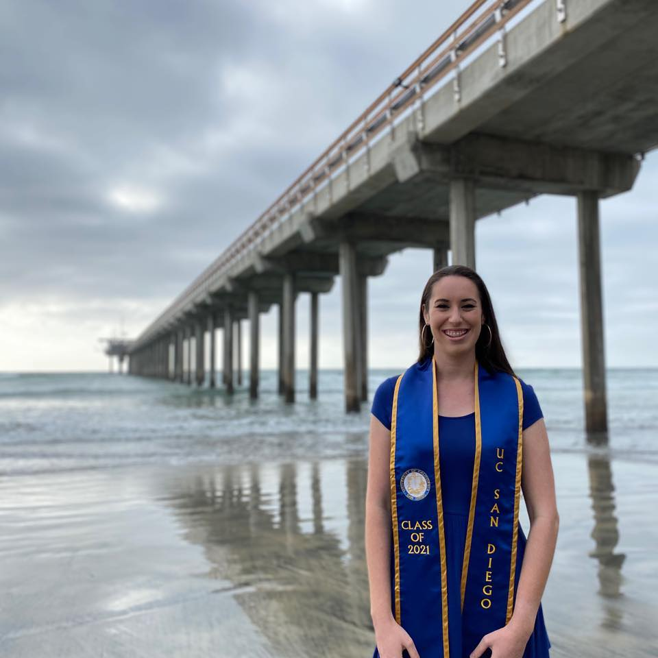
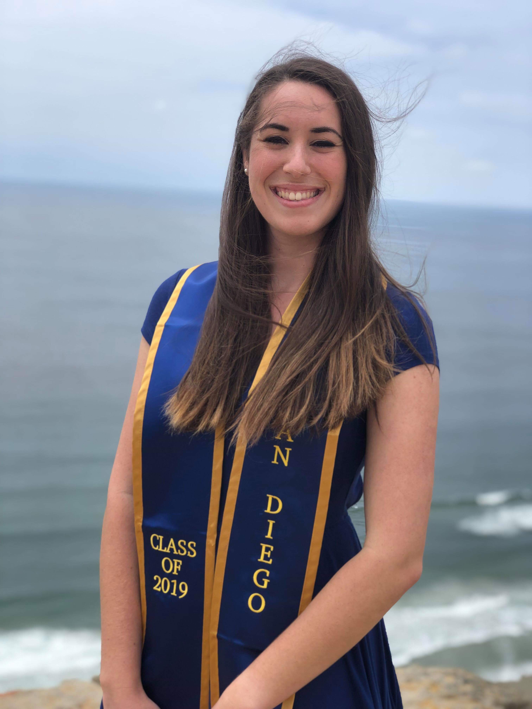

Ithaca, NY
Ph.D. Student in Computational Biology
Aug 2024 – Present
- Advisors: Erik Enbody and Philipp Messer
- Focused on empirical evolutionary biology, population genetics, and
bioinformatics
- Integrating fieldwork and computational approaches to monitor
hybridization in Darwin’s finches (Geospiza) over time
- Investigating the fate of a rare hybrid lineage on Daphne Major
(Galapagos Islands, Ecuador)
- Developed a genomic imputation pipeline in Snakemake for
low-coverage whole-genome sequencing data
Graduate Coursework
- Population Genetics
- Dynamic Models and Data in Biology
- Human Genomics
Awards and Travel Grants
- 2026 Cornell Conference Grant ($500)
Professional Affiliations
- Genetics Society of America (GSA)
- Society for the Study of Evolution (SSE)
- Computational Biology Graduate Student Association (CBGSA),
President (2025–2026)
Undergraduate Mentees
- Sasha Nathani-Sim (2026–present)
- Asa Elliott (2026–present)
La Jolla, CA
M.S. in Biology, Dept of Ecology, Behavior, and Evolution
Sept 2019 – June 2021
- Advisor: Scott Rifkin
- Developed an extensive, original agent-based model in Python to
simulate the life cycles and interactions of a nematode population
- Designed and conducted laboratory experiments to study the effect of
larval dietary restriction on developmental transitions
- Thesis: Simulating the Evolutionary Effects of Environmental and
Genetic Variation on Life History in Caenorhabditis (Python)
- Co-authored two publications predicting the movements of C.
elegans using empirical dynamic modeling (R)
- Good Academic Standing, 4.00 GPA
Graduate Coursework
- Q-Biology
- Quantitative Ecology Project Lab
- Quantitative Evolutionary Biology
- Quantitative Theory of Populations and Communities

La Jolla, CA
B.S. in General Biology, Minor in Mathematics
Sept 2015 – June 2019
- Attended Eleanor Roosevelt College (ERC) in UCSD’s unique college
system
- Good Academic Standing, 3.68 GPA
Biology Courses
- Evolution of Infectious Diseases
- Bioinformatics Laboratory
- Marine Biology
- Recombinant DNA Techniques
- Metabolic Biochemistry
- Evolution
- Ecology / Organisms and Habitats
- Human Physiology I
- Biostatistics
- Genetics
- Biology Lab
Math Courses
- Applicable Math and Computing: Topics in Data Science
- History of Mathematics
- Mathematical Reasoning
- Applied Linear Algebra
- Vector Calculus
- Linear Algebra
- Differential Equations
- Calculus and Analytical Geometry
- Calculus / Science and Engineering
Other STEM Courses
- Our Energy Future
- Organic Chemistry I and II
- Waves, Optics, and Modern Physics and Lab
- Electricity and Magnetism and Lab
- Mechanics and Lab
- General Chemistry I, II, III, and Lab

Folsom, CA
Aug 2011 – May 2015
- AP Coursework: Calculus, Biology, French, Psychology
- Honors Coursework: Chemistry, Physics, English
- Club Involvement: California Scholarship Federation, National
Society of High School Scholars, Key Club, Interact Club
- Valedictorian and graduation speaker, 4.17 GPA